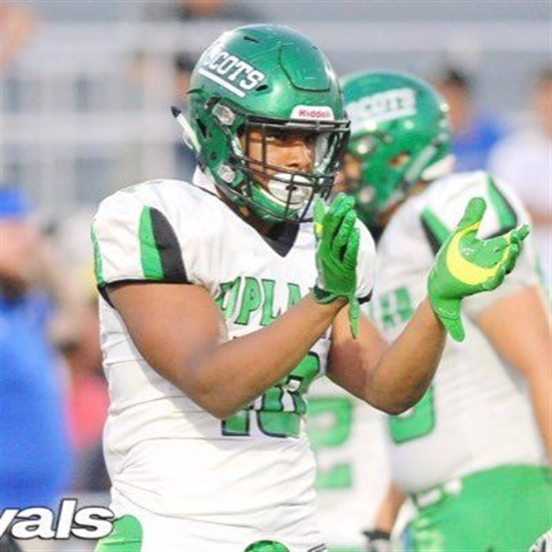
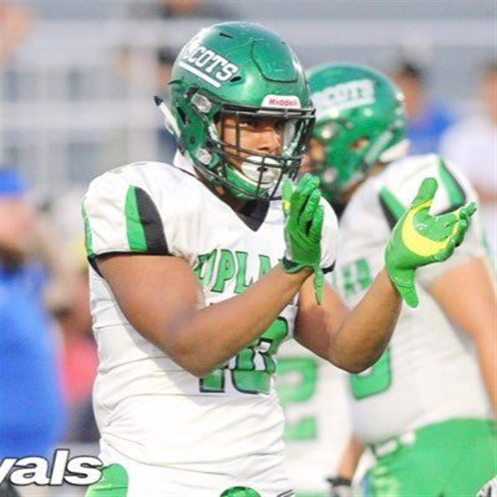

Justin Flowe
 
Attends Upland High School in Upland, CA
⭐⭐⭐⭐⭐
#1 Nationally ranked ILB / #5 Overall
6-2 225 Lbs
Justin Flowe has a perfectly sized body for an ILB of his caliber. His work ethic and leadership is unmatched as well. Justin is very physical and can kill guys. In his high school career he has posted 21.0 sacks and 421 total tackles. He is being compared to Reuben Foster (247 Sports) "He projects as a impact upper tier Power 5 starter and future high-round NFL draft pick." We're very excited to see him grow as a player no matter where he goes to college.
Justin Flowe shows why he is one of the strongest in 2020
Justin is in between Clemson University and The University of Southern California.